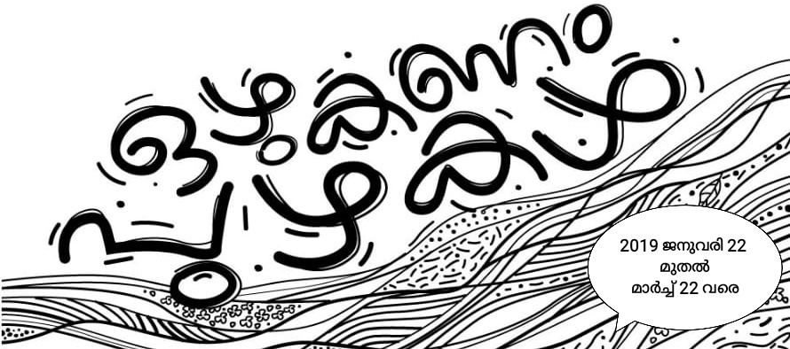

ആമുഖം
2018 കടന്നു പോകുമ്പോൾ കേരളീയര്ക്ക് മറക്കാനാകാത്ത ഒന്നാണ് പ്രളയം. പുഴകൾ നിറഞ്ഞുകവിഞ്ഞൊഴുകി ഈ നാടു മുഴുവൻ പരന്നു; പുഴവഴികൾ ഏതൊക്കെയെന്ന് നാം കണ്ടു. നികത്തപ്പെട്ട നിലങ്ങളും കൈയേറിയ ഇടങ്ങളും ഏവര്ക്കും മനസ്സിലായി. എന്നാൽ മഴ മാറിയതും പുഴവഴികൾ വീണ്ടും മെലിഞ്ഞു. വരള്ച്ചയാണ് ഇപ്പോൾ എങ്ങും കാണുന്നത്. ഇത്ര മഴ കിട്ടിയിട്ടും നമുക്ക് വെള്ളമില്ലാതാകുന്നത് എന്തുകൊണ്ടാണ്? നമ്മുടെ പുഴകൾ ഒരിക്കൽ വര്ഷം മുഴുവൻ 'ഒഴുകിയിരുന്നവയായിരുന്നു'. എന്നാൽ ഇന്ന് നമ്മുടെ മഴ കഴിഞ്ഞയുടൻ പുഴയിലെ ഓരോ നീര്ച്ചാലും അപ്രത്യക്ഷമാകുന്നു. ശുദ്ധജലത്തിന്റെ ഒഴുകുന്ന ഏകസ്രോതസ്സായ പുഴകളൊഴുകാതായാൽ നമ്മുടെ കുടിവെള്ളമാണ് ഇല്ലാതാകുക. ഒഴുക്ക് വീണ്ടെടുക്കാനായി ഒന്നിച്ചുനില്ക്കേണ്ടവരാണ് നമ്മള്. ഒഴുക്ക് നഷ്ടമായ നാള്വഴികളുടെ ചരിത്രം ചുരുങ്ങിയ വാക്കുകളിലിങ്ങനെ.
പുഴകൾ ജനിച്ചുവീഴുന്ന ഉയര്ന്ന വൃഷ്ടിപ്രദേശങ്ങളിലെ സ്വാഭാവിക വനങ്ങൾ നഷ്ടമാകാൻ തുടങ്ങിയതാണ് മനുഷ്യന്റെ അനഭിലഷണീയമായ ഇടപെടലുകളുടെ തുടക്കം. മാത്രമല്ല, അണക്കെട്ടുകൾ, ഡൈവേര്ഷനുകൾ, മണല്ഖനനം, മലിനീകരണം, പ്രളയതടങ്ങളുടെ നികത്തൽ എന്നിവയെല്ലാം പുഴകളെ കൂടുതൽ ക്ഷീണിപ്പിക്കുകയായിരുന്നു.
- പശ്ചിമഘട്ടമലനിരകളിലെ നിബിഡവനങ്ങളിൽ നിന്നും ചോലപ്പുല്മേടുകളിൽ നിന്നും ഉദ്ഭവിക്കുന്ന അസംഖ്യം നീര്ച്ചാലുകളാണ് ഓരോ പുഴയെയും പരിപോഷിപ്പിച്ചിരുന്നത്. 200 വര്ഷം മുമ്പ് സംസ്ഥാനത്തെ ഭൂവിസ്തൃതിയുടെ 60 ശതമാനവും വനാവൃതമായിരുന്നു. ഇന്ന് പക്ഷേ നിബിഡവനങ്ങൾ നാലുശതമാനത്തോളം മാത്രമാണ്. അതോടെ പുഴ വേനലിലൊഴുകാതായി.
- കാടില്ലാതായതിനൊപ്പം കരിങ്കല്ഖനനത്തിനായി പശ്ചിമഘട്ടത്തിന്റെ വലിയ ഭാഗങ്ങൾ തന്നെ ഇല്ലായിക്കൊണ്ടിരിക്കുകയാണ്. ഒപ്പം തണ്ണീര്ത്തടങ്ങളും നെല്വയലുകളും ഇടനാടന്കുന്നുകളും അപ്രത്യക്ഷമായിക്കൊണ്ടിരിക്കുന്നു. ഭൂവിനിയോഗത്തിലെ ഇത്തരം മാറ്റങ്ങളും പുഴകളെ കൂടുതൽ ക്ഷീണിപ്പിക്കുകയാണ്.
- പുഴയ്ക്ക് കുറുകെ ഇരുവശത്തെയും മലകളെ ബന്ധിച്ച് നിര്മ്മിക്കുന്ന അണക്കെട്ടുകൾ സ്വാഭാവിക ജലപ്രവാഹത്തെ പൂര്ണ്ണമായി മാറ്റിമറിക്കുന്നു. അണക്കെട്ടുകൾക്ക് മുകളിൽ കിലോമീറ്ററുകളോളം നീളത്തിൽ ഒഴുകിയിരുന്ന പുഴ റിസര്വോയറിന്റെ 'ഭാഗമാകുന്നു. അണക്കെട്ടുകൾക്ക് താഴെ പുഴ പലപ്പോഴും ടണലുകളിലൂടെയും കനാലുകളിലൂടെയും ബന്ധപ്പെട്ട പദ്ധതികളുടെ നടത്തിപ്പുകാരുടെ തീരുമാനങ്ങൾക്കനുസരിച്ച് ഒഴുകുകയാണ്. ചില പുഴകള്/കൈവഴികൾ അണക്കെട്ടുകൾക്ക് കുറച്ചു താഴെയായി പുനര്ജനിക്കുമ്പോൾ മറ്റു ചിലത് പൂര്ണ്ണമായും ഇല്ലാതാകുന്നു.
- മലയിറങ്ങി പുഴയിലൂടെ വരുന്ന മഴവെള്ളത്തിൽ ചെളിയും എക്കലും പാറപൊടിഞ്ഞുണ്ടാകുന്ന മണലും എല്ലാമുണ്ട്. ചെളിയെല്ലാം കഴുകിക്കളഞ്ഞ മണലിനെ പുഴ ഒഴുകുന്ന വഴിയിൽ പലയിടത്തായി വിതരണം ചെയ്യുന്നു. ഇതിലൊരുഭാഗം അഴിമുഖങ്ങളിലും കടലിലും എത്തിയിരുന്നു. ഇടനാട്ടിൽ ധാരാളമായുണ്ടായിരുന്ന മണപ്പുറങ്ങൾ നാട്ടിന്പുറങ്ങളിലെ പ്രധാന സാംസ്കാരിക ഇടങ്ങളിലൊന്നായിരുന്നു. വെള്ളത്തെ അരിച്ച് ശുദ്ധീകരിച്ചും മത്സ്യങ്ങൾക്ക് മുട്ടയിട്ട് പ്രജനനം നടത്താനുള്ള കളമൊരുക്കിയും പുഴത്തീരങ്ങളെ ശക്തിപ്പെടുത്തിയും ഒഴുക്കിന്റെ വേഗം ക്രമീകരിച്ചും സമീപപ്രദേശങ്ങളിലെ ജലനിരപ്പ് ഉയര്ത്തി നിര്ത്തിയും ഒട്ടേറെ ധര്മ്മങ്ങൾ പുഴമണൽ ചെയ്തിരുന്നു.
- കെട്ടിടനിര്മ്മാണത്തിനുള്ള അസംസ്കൃതവസ്തുവായും നിലം നികത്താൻ എളുപ്പത്തിൽ ലഭിക്കുന്ന വിഭവമായും കണ്ട് നമ്മൾ പുഴമണൽ വ്യാപകമായി വാരിത്തുടങ്ങുന്നത് ഇരുപതാംനൂറ്റാണ്ടിന്റെ നാലാം പാദത്തിലാണ്. 15-20 വര്ഷങ്ങൾ കൊണ്ടുതന്നെ ആയിരക്കണക്കിനു വര്ഷങ്ങൾ കൊണ്ടുണ്ടായ മണല്ശേഖരം മുഴുവൻ നമ്മൾ വാരിത്തീര്ത്തു. പുഴയിലെ ജലനിരപ്പ് നാലും അഞ്ചും മീറ്ററും അതിലധികവും താഴാൻ തുടങ്ങിയതോടെ സമീപപ്രദേശങ്ങളിലെ കിണറുകൾ വറ്റാൻ തുടങ്ങി. പലയിടത്തും പുഴയുടെ അടിത്തട്ട് സമുദ്രനിരപ്പിനേക്കാൾ താഴെയായി. ഇത് കടലില്നിന്നുള്ള ഓരുവെള്ളം പുഴയിലേക്ക് കൂടുതൽ കൂടുതൽ കടന്നുവരാനിടയാക്കി.
- ഒഴുക്കില്ലാതായ പുഴകളിൽ പലയിടങ്ങളിൽ നിന്നും മാലിന്യങ്ങളെത്തുകയാണ്. രാസവളങ്ങളും കീടനാശിനികളും വ്യാവസായിക മാലിന്യങ്ങളും നഗരമാലിന്യങ്ങളും നമ്മുടെ പുഴകളെ മാലിന്യവാഹികളായി മാറ്റിയിട്ട് കാലമേറെയായി. ലക്ഷക്കണക്കിന് നഗരവാസികൾ ലോകത്തെമ്പാടും കുടിവെള്ളത്തിനടക്കം ആശ്രയിക്കുന്നതോ ഒഴുക്കില്ലാത്ത, ശുദ്ധജലമില്ലാത്ത ഈ പുഴകളെയുമാണ്.
ഒഴുകുന്ന പുഴയ്ക്കേ ജീവനുള്ളൂ. ആ ഒഴുക്ക് മുകളിൽ മാത്രം ഉണ്ടായാൽ പോരാ. പല അടുക്കുകളിലായി പല വേഗങ്ങളിലായി പുഴ ഒഴുകണം. പൂര്ണ്ണമായും പുഴകളുടെ പ്രതാപകാലത്തേക്ക് നമുക്കിനി തിരിച്ചുപോകാനാകുമോ എന്നത് സംശയമാണ്. വര്ത്തമാനകാലത്തിന്റെ ആവശ്യമറിഞ്ഞ് തോടുകളുടെയടക്കം സംരക്ഷണം പുതുതലമുറ ഏറ്റെടുത്താൽ മാത്രമേ ഒഴുക്കുള്ള പുഴകളെ നമുക്ക് വീണ്ടെടുക്കാനാകൂ.
പുഴകളുടെ ഒഴുക്കിനായി അശ്രാന്തം പരിശ്രമിച്ച ഡോ. എ ലതയ്ക്കുള്ള ആദരമായി 'ഫ്രണ്ട്സ് ഓഫ് ലത' രണ്ട് മാസം നീണ്ടുനില്ക്കുന്ന 'ഒഴുകണം പുഴകള്' എന്ന സംസ്ഥാനതല ക്യാംപെയ്ൻ സംഘടിപ്പിക്കുന്നു. പുഴകൾ ഒഴുകേണ്ടതിന്റെ അനിവാര്യത പൊതുസമൂഹം ഉൾക്കൊള്ളുന്നതിനും ഒഴുക്കിന് വിഘാതം സൃഷ്ടിക്കുന്ന ഘടകങ്ങൾ തിരിച്ചറിയുന്നതിനും ക്യാംപെയ്ൻ സഹായിക്കുമെന്നാണ് പ്രതീക്ഷ. ഒപ്പം തന്നെ പുഴകളുടെ ഒഴുക്ക് തിരിച്ചുപിടിക്കാനുള്ള ജനകീയപ്രവര്ത്തനങ്ങൾ ശക്തിപ്പെടുത്തുന്നതിനും ഇതിലൂടെ കഴിയുമെന്ന് പ്രത്യാശിക്കുന്നു.
2019 ജനുവരി 22 മുതൽ ലോകജലദിനമായ മാര്ച്ച് 22 വരെയാണ് ക്യാംപെയ്ന്. പുഴത്തടങ്ങൾ, വിദ്യാഭ്യാസസ്ഥാപനങ്ങൾ, തദ്ദേശസ്വയംഭരണസ്ഥാപനങ്ങൾ എന്നിവ കേന്ദ്രീകരിച്ച് വൈവിധ്യമാര്ന്ന പരിപാടികൾ ക്യാംപെയ്ന്റെ ഭാഗമായി ഉണ്ടാകും. സെമിനാറുകൾ, ശില്പശാലകൾ, പ്രദര്ശനങ്ങൾ, പുഴനടത്തങ്ങൾ, പുഴയാത്രകൾ, പുഴയോരജൈവസംരക്ഷണപ്രവര്ത്തനങ്ങൾ, കലാ-സാംസ്കാരികപരിപാടികൾ തുടങ്ങി നിരവധി പരിപാടികൾ നടക്കേണ്ടതുണ്ട്. രാഷ്ട്രീയ-സാമൂഹിക-സാംസ്കാരിക-പാരിസ്ഥിതികരംഗത്തെ നിരവധി സംഘടനകൾ ഇതിന്റെ ഭാഗമാകുന്നു. താങ്കളുമുണ്ടാകുമല്ലോ.
ചെയര്മാൻ :ഡോ.വി.എസ്.വിജയന്ജനറൽ കണ്വീനര് :സി.ആര്.നീലകണ്ഠൻ
ചീഫ് കോ-ഓഡിനേറ്റര് :എസ്.പി. രവി.
 Ozhukanam Puzhakal Februvary Events
Ozhukanam Puzhakal Februvary Events